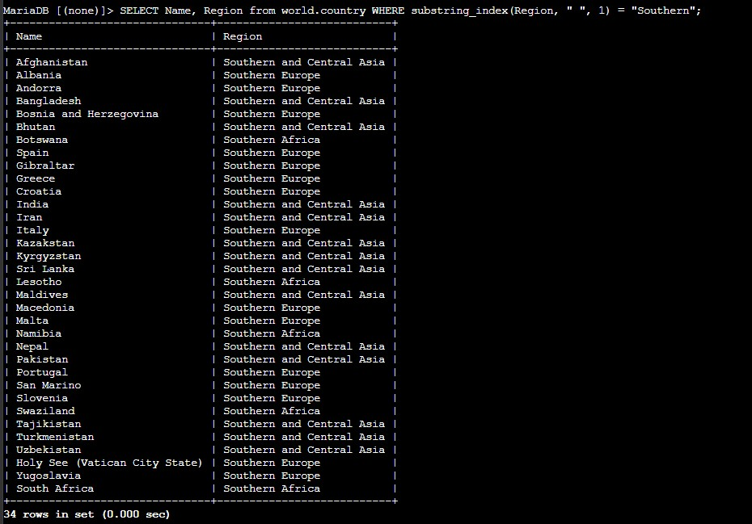
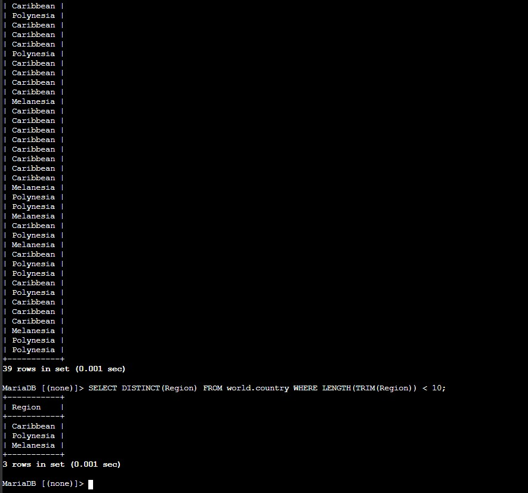
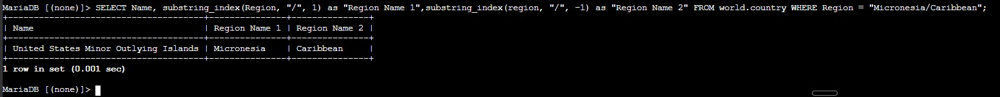

Aggregate Functions
Calculated global totals and summary values with SUM(), AVG(), MAX(), MIN(), and COUNT().
This lab extends the earlier query exercises by introducing aggregate functions, string splitting, string length checks, trimming, and duplicate filtering. The queries still use the world.country table, but the focus is now on transforming and filtering data with functions.
Connected to the Command Host, reviewed the world database, used aggregate functions to summarize population values, filtered rows with SUBSTRING_INDEX(), cleaned region names with LENGTH(TRIM(...)), removed duplicates with DISTINCT, and solved the challenge by splitting Micronesia/Caribbean into two separate columns.
Calculated global totals and summary values with SUM(), AVG(), MAX(), MIN(), and COUNT().
Used SUBSTRING_INDEX(), LENGTH(), and TRIM() to filter records based on parts of a string.
Split one region value into two separate columns so the result set became easier to read.
The lab moved from broad numeric summaries to more targeted string-based filters and then finished with a formatting challenge.
mysql -u root --password='re:St@rt!9'.world database existed with SHOW DATABASES; and reviewed the country table before applying any functions.SUM(), AVG(), MAX(), MIN(), and COUNT() to summarize population data across all countries.substring_index(Region, " ", 1) to split the region value at the first blank space.WHERE clause to return only countries where the first word of the region was Southern.
Region column by its first word, returning only rows whose region starts with Southern.LENGTH(TRIM(Region)) < 10 to return only region names shorter than ten characters after trimming any leading or trailing spaces.DISTINCT(Region) to remove duplicates and keep only the unique region names that match the condition.
DISTINCT to reduce the output to unique regions only.Region = "Micronesia/Caribbean".substring_index(Region, "/", 1) for Region Name 1 and substring_index(Region, "/", -1) for Region Name 2.
Micronesia/Caribbean into two readable columns.Main functions used to summarize values, manipulate strings, and clean repeated results.
SUM(Population), AVG(Population), MAX(Population), MIN(Population), COUNT(Population)Summarizes numeric values across all matching rows.
substring_index(Region, " ", 1)Returns the text before the first blank space in the region name.
LENGTH(TRIM(Region)) < 10Checks the length of a string after removing leading and trailing blank spaces.
DISTINCT(Region)Filters duplicate region names so each one appears only once in the result set.
substring_index(Region, "/", 1)Returns the part of the region string before the slash.
substring_index(Region, "/", -1)Returns the part of the region string after the slash.
SELECT list, but also inside the WHERE clause to filter records.DISTINCT is useful when a filter produces repeated values and the goal is to keep a clean unique list.This lab made SQL feel more practical because the queries were no longer limited to returning stored values exactly as they exist in the table. Instead, the functions transformed the data into forms that were more useful for analysis and presentation.
The challenge was a good final example of that idea. A single region value was turned into two separate output columns, which shows how query functions can reshape the result set without changing the underlying data.